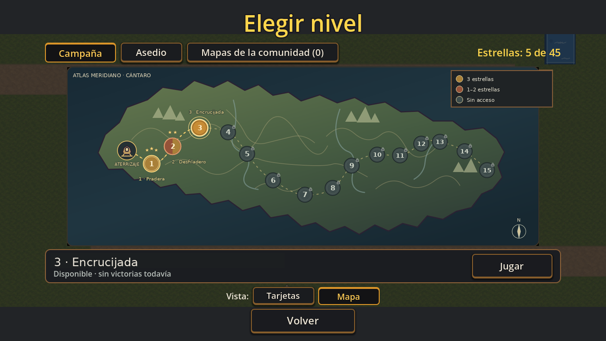
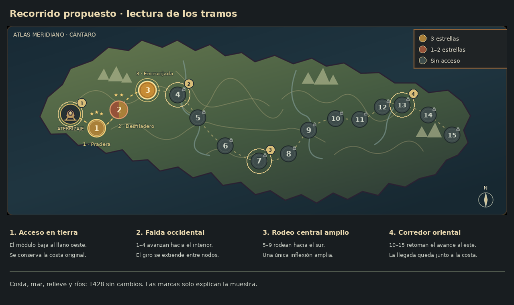

Un recorrido sobre el mapa original
La propuesta conserva la costa, el mar, el relieve y los ríos de T428. Cambia el aterrizaje y abre el recorrido de oeste a este: un avance hacia el interior occidental, un rodeo amplio por el sur y la continuación hacia el extremo oriental.

T483 · La costa es exactamente la original. El aterrizaje baja al llano; 1–4 avanzan hacia el interior occidental, 5–9 trazan un rodeo amplio hacia el sur y 10–15 retoman el avance hacia el este.
Las tres capturas tienen 1280 × 720. Cambiá de versión para comparar en el mismo lugar. Las etiquetas antiguas de la captura original son referencia; no se proponen para integrar.
Qué sostiene el recorrido
El mapa vuelve a dominarSe recuperan la escala sobria y los grises del atlas. Los puntos de la ruta tienen distancias y alturas diferentes; la mayoría queda en los tramos, fuera de los giros.
Un único rodeo centralSe elimina la sucesión de tres ondas del #78. El rodeo ocupa varios niveles y el avance se estira hacia el este, con una llegada abierta.

Las cuatro marcas explican los tramos y se muestran solo en esta lámina.
La decisión para esta muestra
¿Este recorrido conserva el atractivo del original y se siente como un avance por el continente? Si un tramo todavía te resulta artificial, indicá entre qué niveles: la fuente permite corregirlo sin rehacer el estilo.
Muestra estática para aprobación visual. No integra arte al juego, no define biomas ni valida controles, teléfono o rendimiento. El diseño final de los estandartes se aprueba por separado.